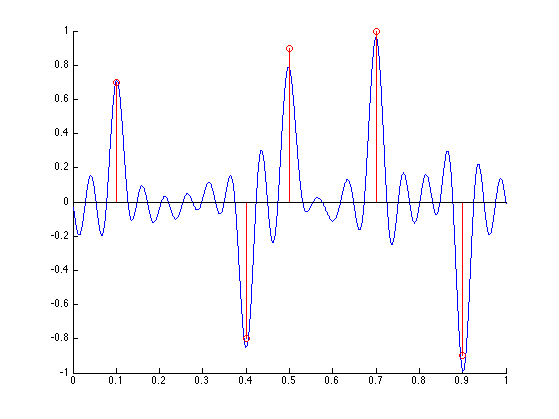
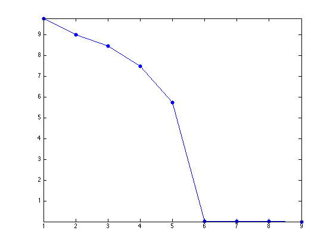
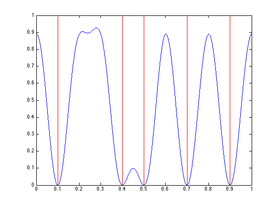
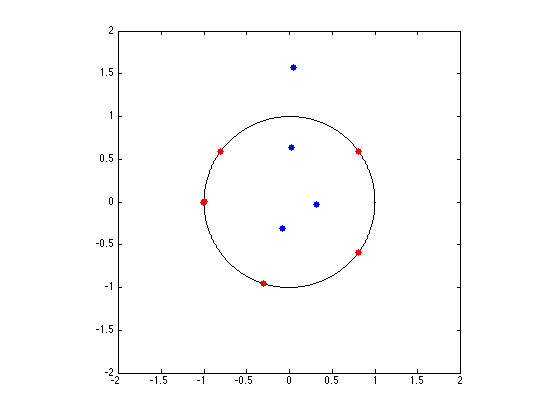
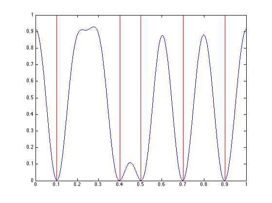
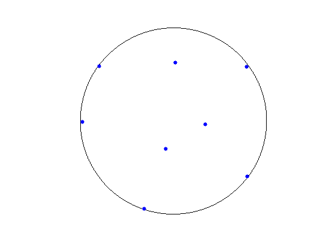
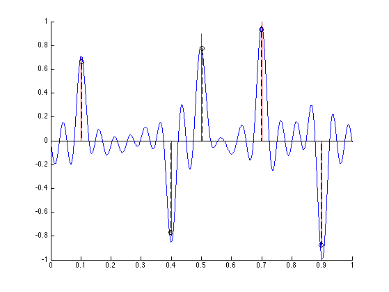
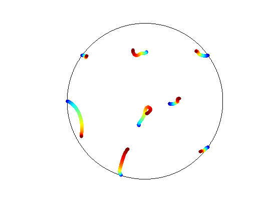

Sparse Spikes Deconvolution with MUSIC Algorithm
This numerical tour explores the use of the MUSIC algorithm to perform sparse deconvolution.
Contents
The MUSIC algorithm was introduced by [Schmidt]. It is closely related to Prony's method [Prony], and is very popular in signal processing [KrimViberg], where it is mostly used for line spectral estimation (i.e. find locations of Diracs in the Fourier spectrum), and we re-formulate here as a problem of finding Diracs' over the temporal domain.
We follow here the exposition of [LiaoFannjiang] who propose a theoretical analysis of the performances of this method. Several related algorithms exists, see for instance [RoyKailathHuaSarkar,DemNeedNg].
Installing toolboxes and setting up the path.
You need to download the following files: signal toolbox and general toolbox.
You need to unzip these toolboxes in your working directory, so that you have toolbox_signal and toolbox_general in your directory.
For Scilab user: you must replace the Matlab comment '%' by its Scilab counterpart '//'.
Recommandation: You should create a text file named for instance numericaltour.sce (in Scilab) or numericaltour.m (in Matlab) to write all the Scilab/Matlab command you want to execute. Then, simply run exec('numericaltour.sce'); (in Scilab) or numericaltour; (in Matlab) to run the commands.
Execute this line only if you are using Matlab.
getd = @(p)path(p,path); % scilab users must *not* execute this
Then you can add the toolboxes to the path.
getd('toolbox_signal/'); getd('toolbox_general/'); ms = 20; % markersize
MUSIC Algorithm
We consider here the problem of recovering a Radon measure \(m_0 \in \Mm(\mathbb{T})\) defined on the torus \(\mathbb{T}=\RR/\ZZ\) from of possibly noisy low-pass measurements \[ y = y_0 + w \qwhereq y_0 = \Phi m_0 \] where \(w\) is the noise term, and so that \( \Phi m \) computes the first \(M+1\) low frequencies of the Fourier transform of \(m\), i.e. \[ \forall \ell \in \{0,\ldots,M\}, \quad (\Phi m)_\ell = \int_{\mathbb{T}} e^{-2\imath\pi x \ell} d m(x). \] We only consider positive frequency because we assume \(m\) is a real measure.
In the following, we consider a discrete measure of the form \(m_0=m_{a_0,x_0}\) where we used the following notation \[ m_{a,x} = \sum_{i=1}^N a_i \de_{x_i} \] where \(a \in \RR^N\) and \(x \in \mathbb{T}^N\).
We thus have \(\Phi m_{a,x} = \Phi_x^M a\) where \[ \Phi_x^{M} = ( e^{-2\imath\pi x_j \ell} )_{0 \leq\ell \leq M, 1 \leq j \leq N} \in \RR^{(M+1) \times N}. \]
Note that \(\Phi_x^{M}\) is a (rectangular) Vandermonde matrix, since \[ \Phi_x^M = (V_{\ga(x)}^M)^* \qwhereq \ga(x) = ( e^{2\imath\pi x_j} )_{j=1}^N \in \CC^N. \]
For \(y \in \RR^M\) and for \(0<L<M\) we denote the Hankel matrix \[ H_y = \begin{pmatrix} y_0 & y_1 & \ldots & y_{M-L} \\ y_1 & y_2 & \ldots & y_{M-L+1} \\ \vdots & \vdots & \ddots & \vdots \\ y_L & y_{L+1} & \ldots & y_M \end{pmatrix} \in \RR^{(L+1) \times (M-L+1) }. \]
Since \(y=\Phi_x^M a+w\), one can check that one has the following factorization \[ H_y = \Phi_x^{L} \diag(a) ( \Phi_x^{M-L} )^* + H_{w}. \]
We suppose that \(\min(L,M-L+1) \geq N\). The fundamental property, which is based on the above factorization, is that \[ s \in \{x_{0,1},\ldots,x_{0,N}\} \quad\Longleftrightarrow\quad \phi_L(s) \in \text{Im}(H_{y_0}) \qwhereq \phi_L(s) = (e^{-2\imath\pi \ell s })_{0 \leq s \leq L} \in \CC^{L+1}. \]
From observations \(y\), we define the following detection function \[ \forall s \in \mathbb{T}, \quad d_y(s) = \norm{ U^{\bot,*} \phi^L(s) }^2, \] where we considered the following SVD factorization \[ H_y = [U, U^\bot] \diag_j(\si_j) [V, V^\bot]^* \] \[ \qwhereq \choice{ U \in \CC^{(L+1) \times N}, U^\bot \in \CC^{(L+1) \times (L+1-N)} \\ V \in \CC^{(M-L+1) \times N}, V^\bot \in \CC^{(M-L+1) \times (M-L+1-N)}. } \]
The detection property can hence be conveniently re-written using this detection function as \[ \{x_{0,1},\ldots,x_{0,N}\} = \enscond{ s }{ d_{y_0}(s)=0 }. \]
Sparse Spikes Deconvolution
We compute here some low frequency measurements.
Number \(M\) of recorded frequency.
M = 18;
Imaging grid, for display purpose.
Q = 1024*4; z = (0:Q)'/Q;
Input positions \(x_0 \in \mathbb{T}^N\).
x0 = [.1 .4 .5 .7 .9]';
Number \(N\) of spikes.
N = 5;
Input amplitudes \(a_0 \in \RR^N\).
a0 = [.7 -.8 .9 1 -.9]';
Observation operator at position \(x\), i.e. \(\Phi_x\).
Phi = @(x)exp(-2i*pi*(0:M)'*x(:)');
Observations \(y=y_0+w\).
sigma = .15; w = (randn(M+1,1)+1i*randn(M+1,1)); w = w/norm(w); y0 = Phi(x0)*a0; y = y0 + sigma*norm(y0)*w;
Compute the observed low frequency signal \[ f = \frac{1}{2M+1} \sum_{\ell=-P}^P y_\ell e^{2\imath\pi \ell \cdot} \] where we completed the observation using \(y_{-\ell} = \bar y_{\ell}\) since the input measure is real.
PhiT = @(x)exp(2i*pi*x(:)*(-M:M)) / (2*M+1); f = real( PhiT(z) * [conj(y(end:-1:2)); y]);
Display the observed signal \(f\), together with the spikes locations.
clf; hold on; plot(z, f); stem(x0,a0, 'r');
Noiseless Recovery
We first check the exact recovery when using \(y_0\).
We set here \(L=M/2\), which is a standard choice.
L = M/2;
Build Hankel matrix, one must have min(size(H))>N.
MusicHankel = @(y)hankel(y(1:L),y(L:M));
Compute SVD of \(H_{y_0}\).
[U,S,V] = svd(MusicHankel(y0),0); S = diag(S);
Display the decay of the eigenvalues of \(H_{y_0}\). Since there is no noise, only the \(N\) largest one are non-zero. This is a convenient way to detect \(N\) if it is unknown.
clf; plot(S, '.-', 'MarkerSize', ms); axis tight;
Imaging function \(d_{y_0}\), evaluated on a thin grid \(z \in \mathbb{T}^Q\).
Ubot = U(:,N+1:end); d = Ubot'*exp(-2i*pi*(0:L-1)'*z(:)'); d = sum(abs(d).^2) / L;
Display \(d\).
clf; hold on; plot(z, d, 'b'); stem(x0, 1+x0*0, 'r.'); axis([0 1 0 1]); box on;
Computing the Diracs' Locations by Root Finding
Instead of evaluating the function \(d_{y_0}\) on a thin grid, it is possible to compute directly its zeros using root finding.
Indeed, one has \[ d_y(s) = \norm{ U^{\bot,*} \phi^L(s) }^2 = \sum_j \sum_{\ell,\ell'} \bar U^{\bot}_{\ell,j} U^{\bot}_{\ell',j} z^{\ell-\ell'} \] where we denoted \(z=e^{2\imath\pi s}\).
So the zeros of \(d_y\) are equal to the zeros of the polynomial \(P_y\) that are on the unit circle, where we introduced \[ P_y(z) = \sum_\ell C_\ell z^\ell \qwhereq \choice{ C_\ell = \sum_{j} B_{j,\ell}, \\ B_{j,\cdot} = U_{\cdot,j} \star \bar U_{-\cdot,j}, \\ } \] where \(\star\) is the product of convolution.
This means that \[ \enscond{s}{d_y(s)=0} = \frac{1}{2\pi} \text{Angle}\pa{ \enscond{z}{P_y(z)=0 \qandq \abs{z}=1} } \] where Angle returns the angle of a complex number.
Compute the coefficients \(C\) of the polynomial \(P_{y_0}\).
B = []; for j=1:size(Ubot,2) u = Ubot(:,j); v = flipud(conj(u)); B(:,j) = conv(u,v); end C = sum(B,2);
Find its roots.
R = roots(C(end:-1:1));
Locate those that are along the circle.
R1 = R(abs( abs(R)-1 )<1e-4);
Display roots.
clf; hold on; plot(exp(2i*pi*z), 'k'); plot(R, 'b.', 'MarkerSize', ms); plot(R1, 'r.', 'MarkerSize', ms); axis equal; box on; axis([-1 1 -1 1]*2);
Sort according to angle, and discard one out of two (because of double roots).
[x1,I] = sort(mod(angle(R1),2*pi)/(2*pi)); x1 = x1(1:2:end);
Compare the found locations with the ground trust.
disp( ['Error (should be 0): ' num2str(norm(x1-x0))] );
Error (should be 0): 3.1113e-09
Noisy Recovery
In practice, one has access to noisy observation \(y=y_0+w\), and one approximates the support \(x\) using the best \(N\) local minima \( \tilde x = \{\tilde x_1,\ldots,\tilde x_N\} \in \mathbb{T}^N \) of \(d_{y}\).
Exercice 1: (check the solution) Compute and display \(d_y\)
exo1;
Exercice 2: (check the solution) Display the roots of \(P_y\) that are inside the unit disk
exo2;
Exercice 3: (check the solution) Keep only the best \(N\) ones, i.e. those that are the closest from the unit circle. We denote those as \(\tilde x \in \mathbb{T}^N\). Recover an approximation \(\tilde a\) of the amplitudes \(a_0\) By solving in least squares (using backslash operator) the system \( \Phi_{\tilde x} \tilde a = y. \) Display the recovered measure \( m_{\tilde a, \tilde x} \).
exo3;
Exercice 4: (check the solution) Display the evolution of roots as the noise level \(\sigma\) increases.
exo4;
Bibliography
- [Schmidt] R. Schmidt, Multiple emitter location and signal parameter estimation, IEEE Trans. on Antennas and Propagation, vol. 34, no. 3, pp. 276-280, 1986.
- [LiaoFannjiang14] W. Liao, A. Fannjiang, MUSIC for Single-Snapshot Spectral Estimation: Stability and Super-resolution, 2014.
- [Prony] G. R. B. de Prony, Essai Experimentale et Analytique, J. de L'Ecole Polytechnique 2, pp. 24-76, 1795.
- [KrimViberg] H. Krim and M. Viberg, Two decades of array signal processing research: the parametric approach, IEEE Signal Processing Magazine 13(4), pp.67-94, 1996.
- [RoyKailath] R. Roy and T. Kailath, ESPRIT ? Estimation of signal parameters via rotation invariance techniques, IEEE Trans. Acoust., Speech, Signal Proc., vol. 17, no. 7, July 1989
- [HuaSarkar] Y. Hua and T. K. Sarkar, Matrix pencil method for estimating parameters of exponentially damped/undamped sinusoids in noise, IEEE Transactions on Acoustics, Speech and Signal Processing 38(5), pp.814-824, 1990.
- [DemNeedNg] L. Demanet, D. Needell and N. Nguyen, Super-resolution via superset selection and pruning, Proceedings of the 10th International Conference on Sampling Theory and Applications, 2013.